Đang cập nhật
Nội dung trang này chưa được cập nhật cho Godot
4.7
và có thể đã lỗi thời. Nếu bạn biết cách cải thiện trang này hoặc xác nhận
được rằng nó vẫn đúng, hãy gửi một pull request (bản tiếng Anh).
Tạo nguyên mẫu level bằng CSG
CSG là viết tắt của Constructive Solid Geometry, một công cụ để kết hợp các hình cơ bản hoặc mesh tùy chỉnh nhằm tạo ra các hình phức tạp hơn. Trong phần mềm dựng hình 3D, CSG thường được biết đến với tên "Boolean Operators".
Tạo nguyên mẫu level là một trong những công dụng chính của CSG trong Godot. Kỹ thuật này cho phép người dùng tạo các hình phổ biến nhất bằng cách kết hợp các hình nguyên thủy (primitive). Có thể tạo môi trường nội thất bằng cách dùng các primitive bị đảo ngược.
Ghi chú
Các node CSG trong Godot chủ yếu dành cho việc tạo nguyên mẫu. Không có hỗ trợ tích hợp cho UV mapping hay chỉnh sửa đa giác 3D (dù có thể dùng đa giác 2D được đùn với node CSGPolygon3D).
Nếu bạn đang tìm một công cụ thiết kế level dễ dùng cho dự án, bạn có thể muốn dùng FuncGodot hoặc Cyclops Level Builder thay thế.
Xem thêm
Bạn có thể xem cách dùng các node CSG để dựng nhiều hình khác nhau (như cầu thang hoặc đường) qua dự án demo Constructive Solid Geometry.
Giới thiệu về các node CSG
Giống như các tính năng khác của Godot, CSG được hỗ trợ dưới dạng node. Các node CSG gồm:
CSGCylinder3D (cũng hỗ trợ hình nón)
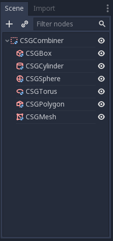

Tính năng của công cụ CSG
Mọi node CSG đều hỗ trợ 3 loại phép toán boolean:
Union: Hình học của cả hai primitive được hợp nhất, phần hình học giao nhau bị loại bỏ.
Intersection: Chỉ phần hình học giao nhau được giữ lại, phần còn lại bị loại bỏ.
Subtraction: Hình thứ hai bị trừ khỏi hình thứ nhất, để lại một vết lõm có hình dạng của nó.
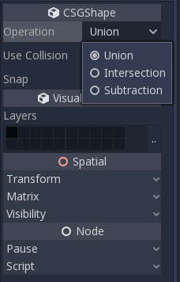

CSGPolygon
Node CSGPolygon3D đùn một Polygon được vẽ trong 2D (theo tọa độ X, Y) theo các cách sau:
Depth: Đùn về phía sau một khoảng cho trước.
Spin: Đùn trong khi xoay quanh gốc của nó.
Path: Đùn dọc theo một node Path. Thao tác này thường được gọi là lofting.
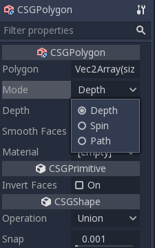
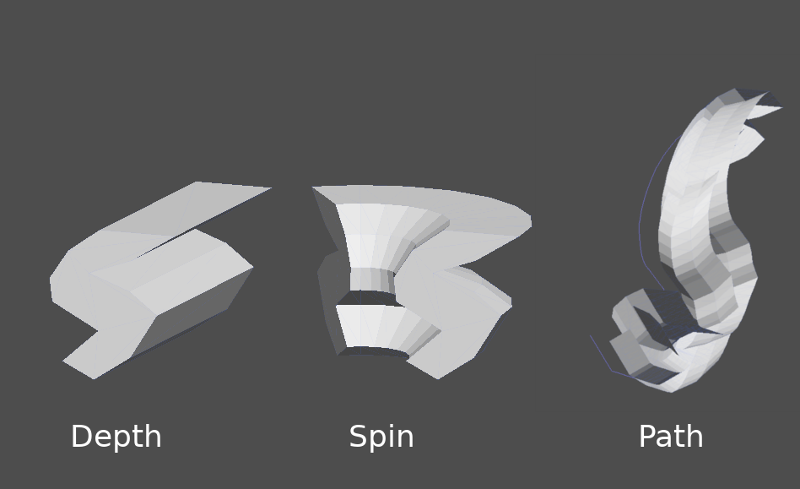
Ghi chú
Chế độ Path phải được cung cấp một node Path3D để hoạt động. Trong node Path, hãy vẽ đường đi và đa giác trong CSGPolygon3D sẽ được đùn dọc theo đường đi đó.
Mesh tùy chỉnh
Có thể dùng mesh tùy chỉnh cho CSGMesh3D miễn là mesh đó manifold. Mesh có thể được dựng trong phần mềm khác và import vào Godot. Hỗ trợ nhiều material.
Để một mesh được dùng làm CSG mesh, nó cần:
khép kín
mỗi cạnh chỉ nối với đúng hai mặt
có thể tích
Và nên tránh:
thể tích âm
tự giao nhau
mặt bên trong
Godot dùng thư viện manifold để triển khai CSG mesh. Định nghĩa kỹ thuật về "manifold" mà Godot sử dụng như sau, được điều chỉnh từ định nghĩa "manifold" của thư viện đó:
Mỗi cạnh của mỗi tam giác phải chứa cùng hai đỉnh (theo chỉ số) như đúng một cạnh tam giác khác, và đỉnh đầu và đỉnh cuối phải đổi chỗ cho nhau giữa hai cạnh này. Các đỉnh tam giác phải xuất hiện theo thứ tự chiều kim đồng hồ khi nhìn từ bên ngoài mesh manifold của Godot Engine.
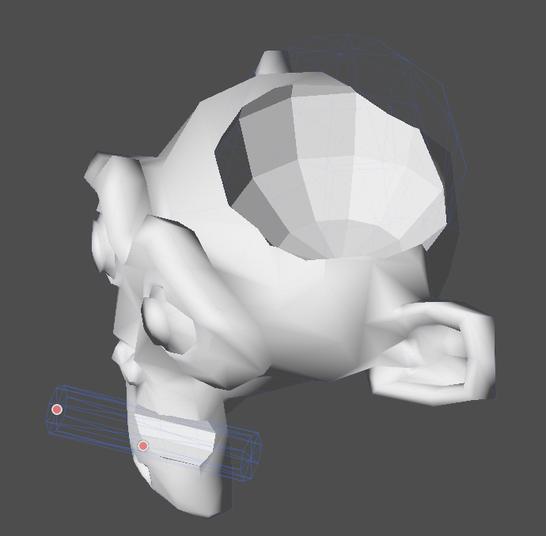
Biến một mesh có sẵn thành manifold bằng Blender
Nếu bạn có một mesh có sẵn chưa phải là manifold, bạn có thể biến nó thành manifold bằng Blender.
Trong Blender, cài đặt và bật addon 3D Print Toolbox.
Chọn mesh bạn muốn biến thành manifold. Mở thanh bên bằng cách nhấn vào mũi tên:

Trong tab 3D Print, dưới mục Clean Up, nhấn nút Make Manifold:
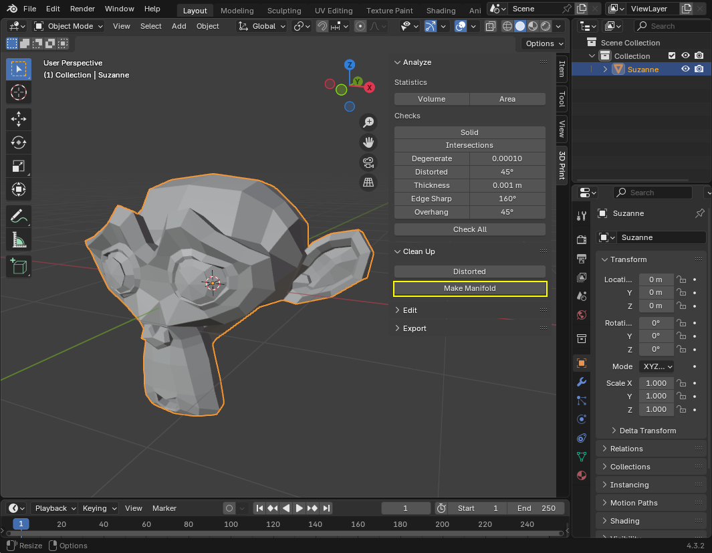
Lúc này mesh đã là manifold và có thể được dùng làm mesh tùy chỉnh.
CSGCombiner3D
Node CSGCombiner3D là một hình rỗng dùng để tổ chức. Nó chỉ kết hợp các node con.
Thứ tự xử lý
Mỗi node CSG trước tiên sẽ xử lý các node con của nó cùng các phép toán của chúng: union, intersection hoặc subtraction, theo thứ tự cây, và lần lượt áp dụng chúng lên chính nó.
Ghi chú
Vì hiệu năng, hãy đảm bảo hình học CSG tương đối đơn giản, vì các mesh phức tạp có thể mất khá lâu để xử lý. Nếu ghép các đối tượng lại với nhau (chẳng hạn bàn và phòng), hãy tạo chúng thành các cây CSG riêng biệt. Nhồi quá nhiều đối tượng vào một cây cuối cùng sẽ bắt đầu ảnh hưởng tới hiệu năng. Chỉ dùng các phép toán nhị phân ở nơi thực sự cần.
Tạo nguyên mẫu một level
Chúng ta sẽ tạo nguyên mẫu một căn phòng để thực hành cách dùng công cụ CSG.
Mẹo
Làm việc ở phép chiếu Orthogonal cho góc nhìn tốt hơn khi kết hợp các hình CSG.
Level của chúng ta sẽ chứa các đối tượng sau:
một căn phòng,
một chiếc giường,
một chiếc đèn,
một chiếc bàn,
một giá sách.
Tạo một scene với node Node3D làm node gốc.
Mẹo
Chiếu sáng mặc định của môi trường không cho tô bóng rõ ràng ở một số góc. Hãy đổi chế độ hiển thị bằng Display Overdraw trong menu viewport 3D, hoặc thêm một node DirectionalLight để giúp bạn nhìn rõ hơn.
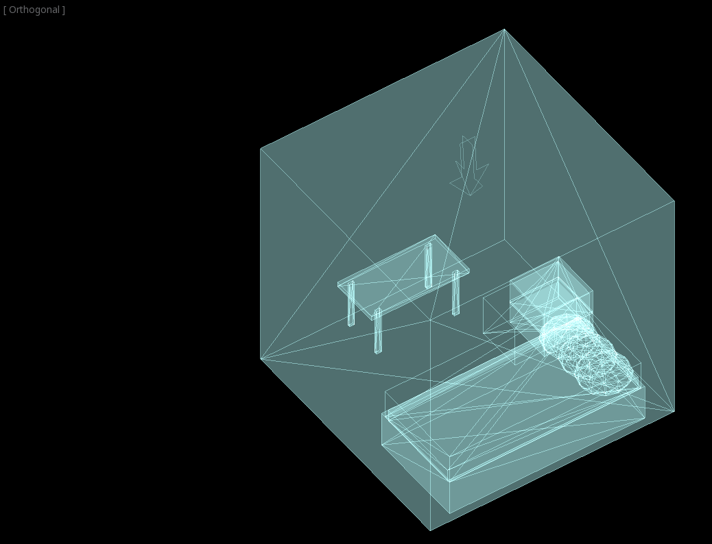
Tạo một CSGBox3D và đặt tên là room, bật Invert Faces và thay đổi kích thước căn phòng.


Tiếp theo, tạo một CSGCombiner3D và đặt tên là desk.
Một chiếc bàn có một mặt bàn và 4 chân:
Tạo 1 node con CSGBox3D ở chế độ Union cho mặt bàn và điều chỉnh kích thước.
Tạo 4 node con CSGBox3D ở chế độ Union cho các chân bàn và điều chỉnh kích thước.
Điều chỉnh vị trí của chúng để trông giống một chiếc bàn.
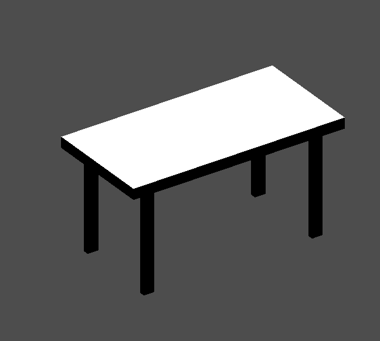
Ghi chú
Các node CSG bên trong một CSGCombiner3D sẽ chỉ xử lý phép toán của chúng trong phạm vi combiner đó. Vì vậy, CSGCombiner3D được dùng để tổ chức các node CSG.
Tạo một CSGCombiner3D và đặt tên là bed.
Chiếc giường của chúng ta gồm 3 phần: khung giường, nệm và gối. Tạo một CSGBox3D và điều chỉnh kích thước cho khung giường. Tạo thêm một CSGBox3D khác và điều chỉnh kích thước cho nệm.
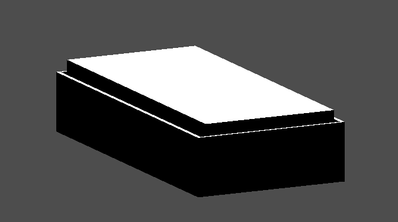
Chúng ta sẽ tạo thêm một CSGCombiner3D tên pillow làm node con của bed. Cây scene sẽ trông như sau:
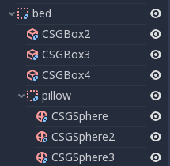
Chúng ta sẽ kết hợp 3 node CSGSphere3D ở chế độ Union để tạo thành chiếc gối. Co giãn trục Y của các khối cầu và bật Smooth Faces.
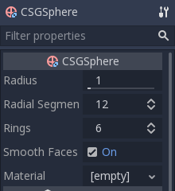
Chọn node pillow và chuyển chế độ sang Subtraction; các khối cầu kết hợp sẽ khoét một lỗ vào nệm.

Thử đổi node cha của node pillow thành node gốc Node3D; cái lỗ sẽ biến mất.
Ghi chú
Điều này minh họa tác động của thứ tự xử lý CSG. Vì node gốc không phải là node CSG, các node CSGCombiner3D là điểm kết thúc của các phép toán; điều này cho thấy công dụng của CSGCombiner3D trong việc tổ chức scene CSG.
Hoàn tác việc đổi node cha sau khi quan sát tác động. Chiếc giường bạn đã dựng sẽ trông như sau:

Tạo một CSGCombiner3D và đặt tên là lamp.
Một chiếc đèn gồm 3 phần: đế, thân và chao đèn. Tạo một CSGCylinder3D, bật tùy chọn Cone và dùng nó làm đế. Tạo thêm một CSGCylinder3D khác và điều chỉnh kích thước để dùng làm thân đèn.
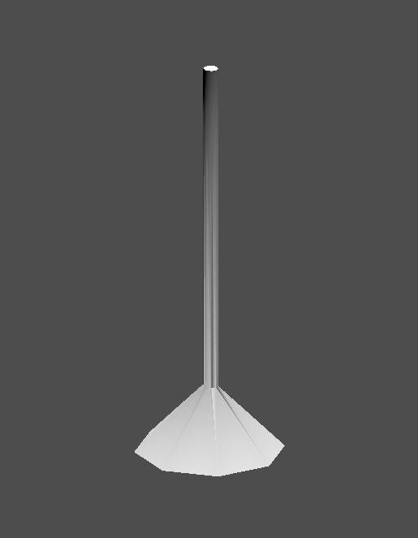
Chúng ta sẽ dùng một CSGPolygon3D cho chao đèn. Dùng chế độ Spin cho CSGPolygon3D và vẽ một hình thang khi đang ở Front View (phím số 1 trên bàn phím số); hình này sẽ được đùn quanh gốc và tạo thành chao đèn.

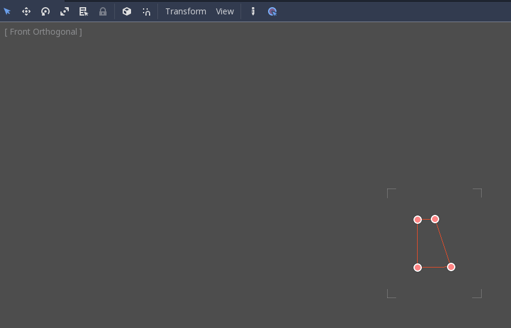

Điều chỉnh vị trí của 3 phần để trông giống một chiếc đèn.
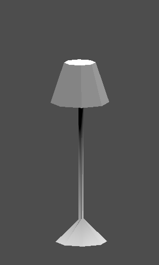
Tạo một CSGCombiner3D và đặt tên là bookshelf.
Chúng ta sẽ dùng 3 node CSGBox3D cho giá sách. Tạo một CSGBox3D và điều chỉnh kích thước; đây sẽ là kích thước của giá sách.
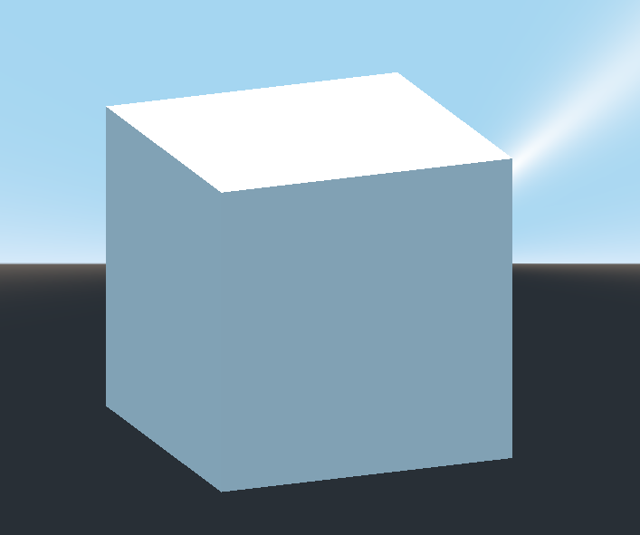
Nhân bản CSGBox3D, rút ngắn kích thước trên mỗi trục và đổi chế độ sang Subtraction.


Bạn gần như đã dựng xong một chiếc giá. Tạo thêm một CSGBox3D để chia giá thành hai tầng.
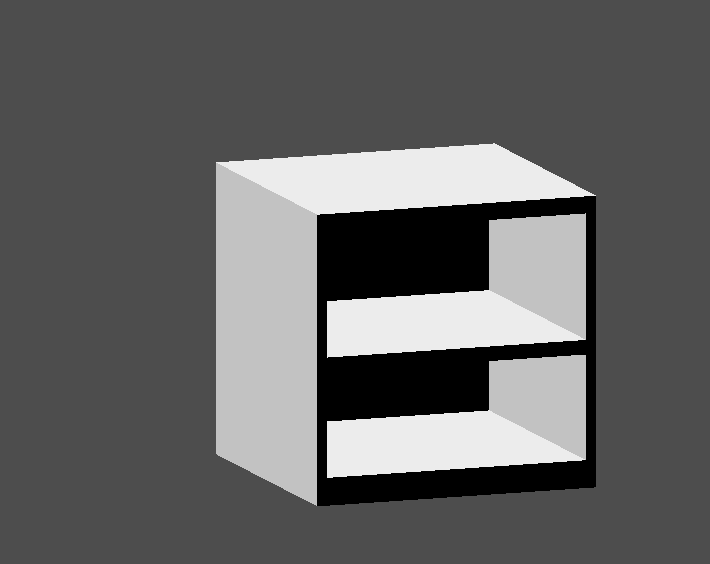
Sắp xếp đồ đạc trong phòng theo ý bạn và scene của bạn sẽ trông như sau:

Bạn đã tạo nguyên mẫu thành công một level căn phòng bằng công cụ CSG trong Godot. Công cụ CSG có thể dùng để thiết kế đủ loại level, chẳng hạn mê cung hay thành phố; hãy khám phá các giới hạn của nó khi thiết kế game.
Dùng texture nguyên mẫu
Standard Material 3D và ORM Material 3D của Godot hỗ trợ triplanar mapping, có thể dùng để tự động áp dụng texture lên các đối tượng bất kỳ mà không bị biến dạng. Điều này rất tiện khi dùng CSG vì Godot chưa hỗ trợ chỉnh sửa UV map trên các node CSG. Triplanar mapping tương đối chậm, nên thường chỉ được dùng cho các bề mặt hữu cơ như địa hình. Dù vậy, khi tạo nguyên mẫu, nó có thể dùng để nhanh chóng áp dụng texture cho các level dựng bằng CSG.
Ghi chú
Nếu bạn cần một số texture để tạo nguyên mẫu, Kenney đã làm một bộ texture nguyên mẫu theo giấy phép CC0.
Có hai cách để áp dụng material cho một node CSG:
Áp dụng nó cho node CSGCombiner3D dưới dạng material override (Geometry > Material Override trong Inspector). Cách này sẽ tự động ảnh hưởng tới các node con, nhưng sẽ khiến bạn không thể thay đổi material ở từng node con riêng lẻ.
Áp dụng material cho từng node riêng lẻ (Material trong Inspector). Bằng cách này, mỗi node CSG có thể có giao diện riêng. Các node CSG dạng trừ sẽ áp dụng material của chúng lên các node mà chúng đang "khoét" vào.
Để áp dụng triplanar mapping cho một node CSG, hãy chọn nó, vào Inspector, nhấn vào chữ [empty] bên cạnh Material Override (hoặc Material với từng node CSG riêng lẻ). Chọn New StandardMaterial3D. Nhấn vào biểu tượng của material vừa tạo để chỉnh sửa. Mở rộng mục Albedo và nạp một texture vào thuộc tính Texture. Bây giờ, mở rộng mục Uv1 và đánh dấu Triplanar. Bạn có thể thay đổi độ lệch và tỷ lệ texture trên từng trục bằng cách điều chỉnh các thuộc tính Scale và Offset ngay phía trên. Giá trị cao hơn ở thuộc tính Scale sẽ khiến texture lặp lại thường xuyên hơn.
Mẹo
Bạn có thể sao chép một StandardMaterial3D để tái sử dụng nó cho các node CSG. Để làm vậy, nhấn vào mũi tên thả xuống cạnh thuộc tính material trong Inspector và chọn Copy. Để dán, chọn node bạn muốn áp dụng material, nhấn vào mũi tên thả xuống cạnh thuộc tính material của nó rồi chọn Paste.
Chuyển đổi sang MeshInstance3D
Kể từ Godot 4.4, bạn có thể chuyển đổi một node CSG và các node con của nó thành một node class_MeshInstance3D.
Việc này có một số lợi ích:
Bake lightmap, vì UV2 có thể được tạo trên MeshInstance3D.
Bake occlusion culling, vì quá trình bake occlusion culling chỉ tính đến MeshInstance3D.
Thời gian tải nhanh hơn, vì CSG mesh không còn cần dựng lại khi scene được tải.
Hiệu năng tốt hơn khi cập nhật transform của node nếu dùng mesh bên trong một node CSG khác.
Để chuyển đổi một node CSG thành node MeshInstance3D, hãy chọn nó, sau đó chọn CSG > Bake Mesh Instance trên thanh công cụ. Node MeshInstance3D sẽ được tạo ở cùng cấp (sibling). Lưu ý rằng node CSG dùng để bake không tự động bị ẩn, vì vậy hãy nhớ ẩn nó để tránh hình học của nó chồng lên MeshInstance3D vừa tạo.
Bạn cũng có thể tạo một collision shape dạng trimesh bằng CSG > Bake Collision Shape. Node class_CollisionShape3D được tạo ra phải là node con của một node class_StaticBody3D hoặc class_AnimatableBody3D thì mới có tác dụng.
Mẹo
Hãy nhớ giữ node CSG gốc trong cây scene để bạn có thể thay đổi hình học sau này nếu cần. Để thay đổi hình học, hãy xóa node MeshInstance3D và cho node CSG gốc hiển thị trở lại.
Xuất sang glTF
Việc phác thảo (block out) một level bằng CSG rồi xuất nó thành mô hình 3D để import vào phần mềm dựng hình 3D có thể rất hữu ích. Bạn có thể làm điều này bằng cách chọn Scene > Export As... > glTF 2.0 Scene.